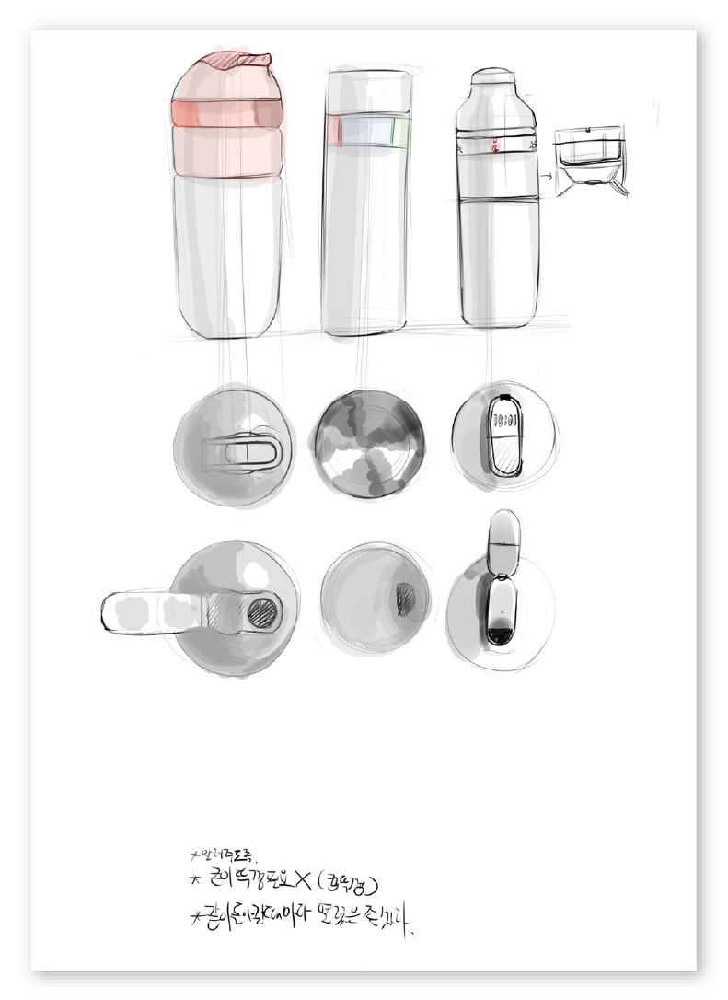
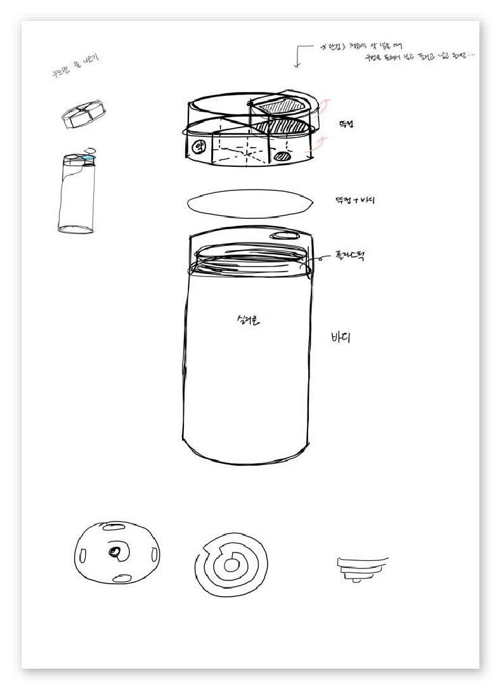
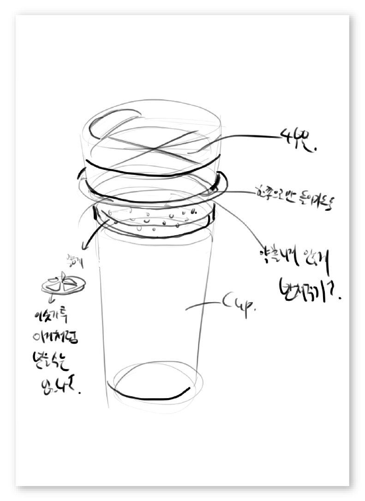
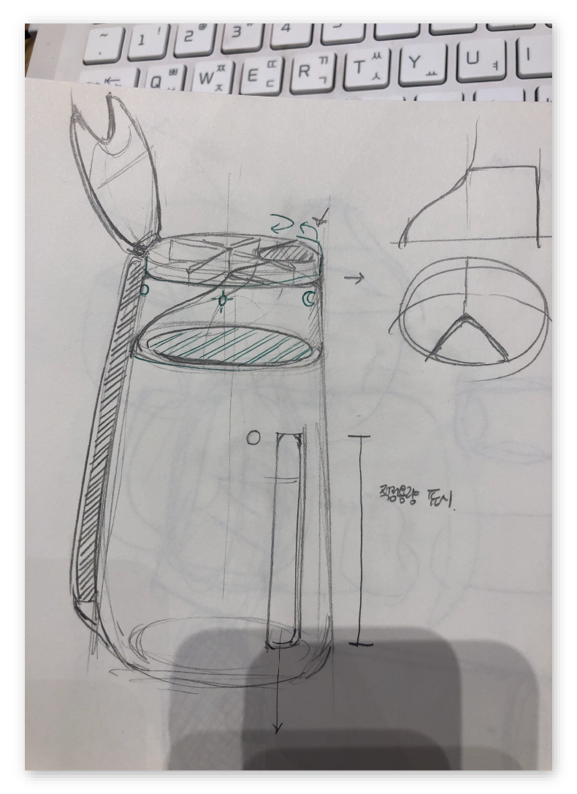
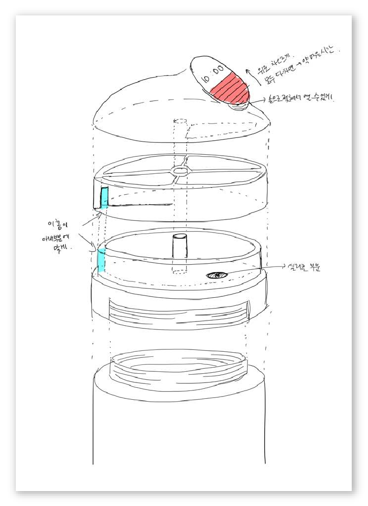
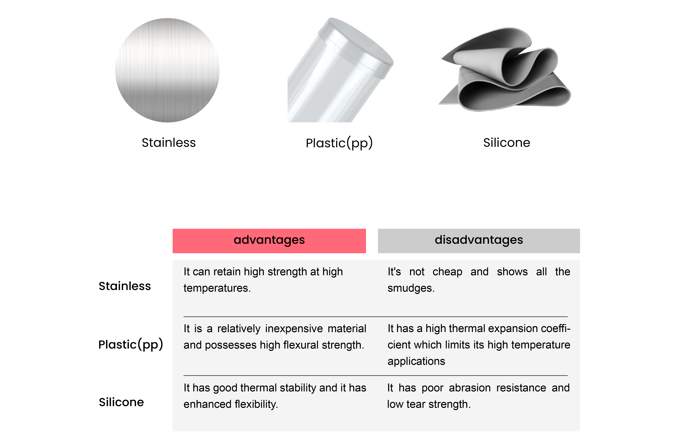

How might we help people who need to take medication regularly take it easily and comfortably?
2. Design Ideation
Exploring Design Ideas
Step1: How to store water with medicine in a tumbler?
Considerations
- Water and medicine must be separated.
- Moisture should not be added to the medicine.
Initial Structure
We decided to put a container for storing pills in a regular tumbler. It is located in the middle of the lid and the water bottle. It is divided into four parts, breakfast, lunch, dinner and blocked parts, and the user will be able to take the pill with water by turning it to the desired part. The bottom of the medicine cabinet is partially pierced, and the top part of the water bottle is all pierced except for some.
Initial Design Sketch

Sketch 01

Sketch 02

Sketch 03

Sketch 04

Sketch 05
Step2: Material?
We conducted researh about various materials that can be used for a tumbler.
Considerations
- Prodect size
- Function (protection, awareness, enjoyment, construction, etc.)
- Soft product/ hard product
Material Research
Feedback
In order to choose the direction that we would pursue in our design, it was important to look at them through an external eye. We hence decided to ask a feedback to industrial design professor who is the advisor of one of our team members.